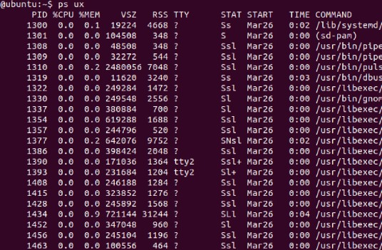
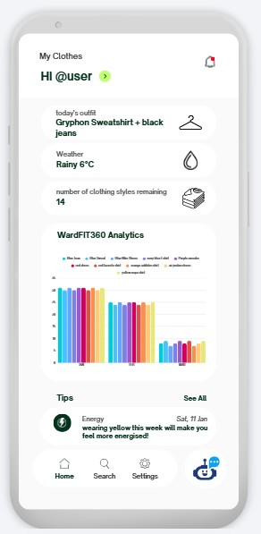
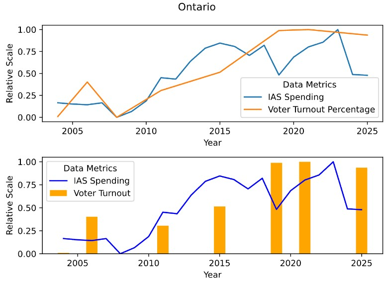
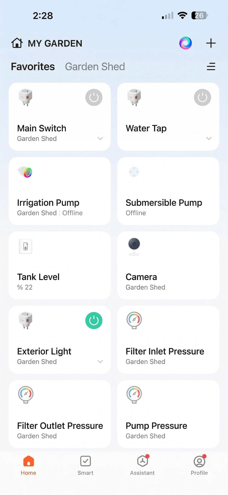

Linux Process Management System
During my time in Guelph, I wanted to dive deep into how operating systems actually handle multiple tasks simultaneously. Let me be honest, this project caused me a few sleepless nights. I developed a C-based program completely within a Linux command-line environment. Working directly with memory in C means you constantly have to watch out for segmentation faults and memory leaks.
This project utilized dynamic arrays to store active processes, complex file parsing to read system configurations, and inter-process communication (IPC). I heavily relied on 'forks' to create child processes and 'pipes' to allow these processes to talk to each other without corrupting data. I spent hours using debugging tools like GDB to track down zombie processes that weren't terminating correctly. It was a highly challenging but incredibly rewarding experience that completely changed my perspective on how my computer's CPU allocates its resources. I now understand the hidden complexity behind simply opening a web browser.

WardFit - Personalized Outfit Recommendation App
Living in Canada, especially in Ontario, means you can experience three different seasons in a single day. Have you ever stared at your closet in the morning, checked the weather app, and still had no idea what to wear? I certainly have. That frustration is exactly why I decided to create WardFit.
WardFit is a mobile application I developed using the Flutter framework for the user interface and Python for the backend logic. Building the UI in Flutter was fun, but the real challenge was the algorithm. The app connects to a live weather API to get real-time local forecasts. It then takes into account your personal style preferences (which you set up during onboarding) and the specific items you have logged in your virtual wardrobe. By combining these data points, it suggests the perfect outfit for the day. Learning how to manage application state in Flutter and connecting it seamlessly to a Python backend was a massive learning curve, but it made me a much better full-stack developer.

Budgetly - Personal Finance Management App
Managing money as a university student can be incredibly tough. Between rent, groceries, textbooks, and the occasional coffee, it is very easy to lose track of your budget. To solve my own problem, I built 'Budgetly', a native iOS application written entirely in Swift.
The core architecture of this app relies heavily on Apple's Core Data framework to ensure that all user financial data is stored locally, securely, and loads instantly without needing an internet connection. But the coolest and most complex part about this project is the integration of machine learning. Instead of forcing the user to manually select a category (like 'Groceries' or 'Entertainment') every time they input a transaction, I trained a lightweight ML model that automatically categorizes expenses based on the merchant's name and past user habits. This frictionless tracking encourages users to actually stick to their budgets.
Statistics Canada Data Analysis
Data science and backend optimization are areas I am very interested in. Data is everywhere, but making sense of it efficiently is the real challenge. For this academic project, I designed a SQL-based program to analyze thousands of rows of data regarding job opportunities and employment trends across Canada, using open-source datasets from Statistics Canada.
Initially, my database queries were incredibly slow due to nested loops and inefficient joins. I realized that writing code that simply 'works' is not enough; it needs to be scalable. I spent a significant amount of time redesigning the database schema, adding proper indexes, and optimizing the query execution logic. This restructuring eventually led to a massive 25% improvement in execution time. This project practically demonstrated the theories I learned in my Analysis of Algorithms coursework.

IoT Drip Irrigation System (Aydin, Turkey)
Out of all my projects, this one holds a special place in my heart because it bridges the gap between software and the physical environment. Back in Aydin, Turkey, agriculture is a vital part of the local economy, but water conservation is becoming increasingly critical due to hotter summers.
I engineered a smart drip irrigation system utilizing IoT (Internet of Things) microcontrollers and environmental sensors. The system is installed directly in the field. It continuously monitors soil moisture levels and local weather conditions to calculate the exact amount of water the crops need at any given hour. It then automatically triggers the water valves. Not only did this hardware-software integration conserve approximately 1.2 million gallons of water annually, but it also decreased manual labor costs by 25%. Seeing my code directly interact with nature to create a measurable, positive environmental impact was an unforgettable milestone in my engineering journey.
